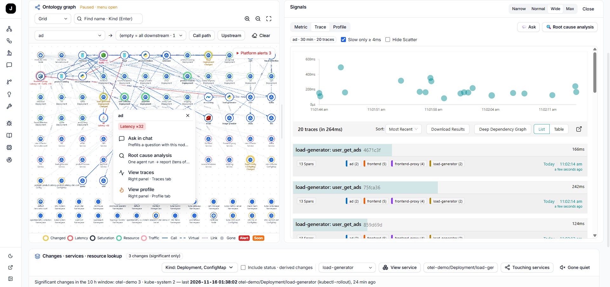

Ontology
JuneAI's ontology is simple and focused on decisions
The JuneAI ontology needs no RAG, graph database, pipeline, data lake, metadata, lineage, or BI. It requires no change to existing systems and no extra development — and no restart, not even staff retraining.
